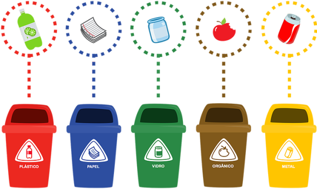

<div class="container-fluid d-flex justify-content-center">
    <div class="row d-flex justify-content-center p-30">
        <div class="col-md-12">
            <h1 class="d-flex justify-content-center">Descarte Consciente</h1>
            <div class="col-md-12 mt-5 d-flex justify-content-center">
                
            </div>
        </div>

<!--card-->
        <div class="card-deck">
            <div class="card border-danger mt-5">
                <div class="card-body">
                    <h5 class="card-title text-danger">Plástico</h5>
                    <p class="card-text">
                        São recicláveis: Garrafa Pet,
                        copos, pratos e talheres descartáveis;
                        Brinquedos de plástico;
                        Para-choque de carros;
                        Sacos de plástico;
                        Canos de PVC;
                        Materiais diversos de plástico.
                    </p>
                    <p>
                        Não são recicláveis: Fraldas;
                        Absorventes;
                        Peças de plástico utilizadas na criação de computadores, celulares e outros materiais
                        eletrônicos;
                        Plástico tipo celofane;
                        Espuma;
                        Embalagens plásticas metalizadas, muito utilizadas em alimentos;
                        Tomadas;
                        Adesivos;
                        Cabos de panela.
                    </p>
                    <p>
                        Como separá-los: potes e frascos limpos e sem resíduos para evitar animais transmissores de
                        doenças próximo ao local de armazenamento.
                    </p>

                </div>
            </div>
            <div class="card border-primary mt-5">
                <div class="card-body">
                    <h5 class="card-title text-primary">Papel</h5>
                    <p class="card-text">São recicláveis: Jornais, revistas, caixas, papelão, papel de fax, formulários
                        de computador, folhas de caderno, cartolinas, cartões, rascunhos escritos, envelopes,
                        fotocópias, folhetos, impressos em geral.</p>
                    <p>
                        Não são recicláveis: Papel sem gordura, restos de comida, graxa.
                    </p>
                    <p>
                        Como separá-los: Devem estar secos, limpos, de preferência não amassados. As caixas de papelão
                        devem estar desmontadas por uma questão de otimização do espaço no armazenamento.
                    </p>

                </div>
            </div>
            <div class="card border-success mt-5">
                <div class="card-body">
                    <h5 class="card-title text-success">Vidro</h5>
                    <p class="card-text">São todos recicláveis: Tampas, potes, frascos, garrafas de bebidas, copos,
                        embalagens. Como separá-los: devem estar limpos e sem resíduos.</p>
                    <P>
                        Como separá-los: Podem estar inteiros ou quebrados. Se quebrados devem ser embalados em papel
                        grosso (jornal ou craft).
                    </P>
                </div>
            </div>
            <div class="card border-secondary mt-5">
                <div class="card-body">
                    <h5 class="card-title text-sencondary">Orgânico</h5>
                    <p class="card-text"> São lixos orgânicos: Alimentos, cascas e restos de comida: carne, vegetais,
                        frutas e ossos;

                        Papel não reciclável usado: papel higiênico, toalhas e guardanapos de papel, filtros de café e
                        saquinhos de chá;

                        Cascas de ovos e sementes;

                        Folhas, caules e restos de madeira;

                        Dejetos humanos ou de animais.</p>
                    <p>
                        Separe corretamente o lixo em casa e descartando o lixo orgânico nos contentores adequados.
                        Desta forma, o lixo será coletado pelo serviço público e encaminhado para os aterro sanitários.
                        Atualmente é possível fazer compostagem doméstica com restos vegetais. Assim, ele se transforma
                        em adubo e pode ser utilizado na agricultura, no seu jardim ou nas plantas da sua casa;
                    </p>

                </div>
            </div>
            <div class="card border-warning mt-5">
                <div class="card-body">
                    <h5 class="card-title text-warning">Metal</h5>
                    <p class="card-text">São todos recicláveis: Latas de alumínio (ex. latas de bebidas), latas de aço
                        (ex.
                        latas de óleo, sardinha, molho de tomate), tampas, ferragens, canos, esquadrias e molduras de
                        quadros.</p>
                    <p>
                        Como separá-los: devem estar limpos e sempre que possível reduzidos a um menor volume
                        (amassados).
                    </p>
                </div>
            </div>
        </div>

<!--Texto Rodapé-->
        <div class="col-md-9">
            <h1 class="d-flex justify-content-center p-30">Mas, ATENÇÃO!</h1>
            <div class="fs-20 text-center">
                <p> O descarte de pilhas, bateria, lâmpadas fluorescentes, eletroeletrônicos, pneus, óleo de cozinha,
                    remédios e suas
                    embalagens, agrotóxicos e outros elementos tóxicos necessita de cuidados especiais para evitar danos
                    ao meio ambiente.
                    Por isso esses resíduos têm sistemas de logísticas reversa e seu descarte deve ser feito em pontos
                    de entrega específicos. Informe-se junto ao seu município sobre os pontos de entrega para cada um
                    desses resíduos.
                </p>
            </div>
        </div>
    </div>
</div>